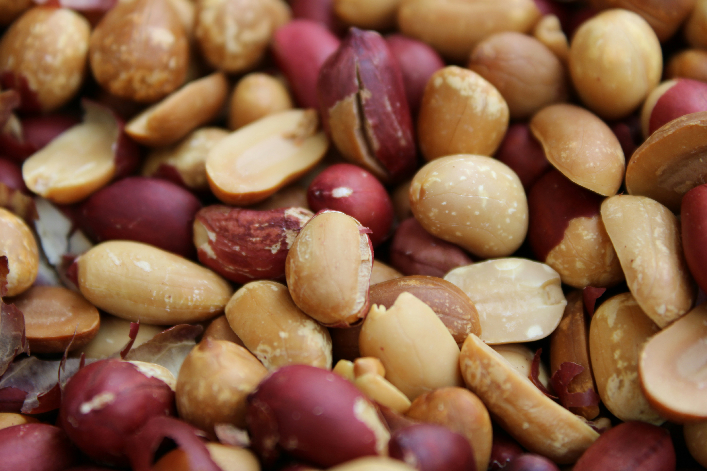
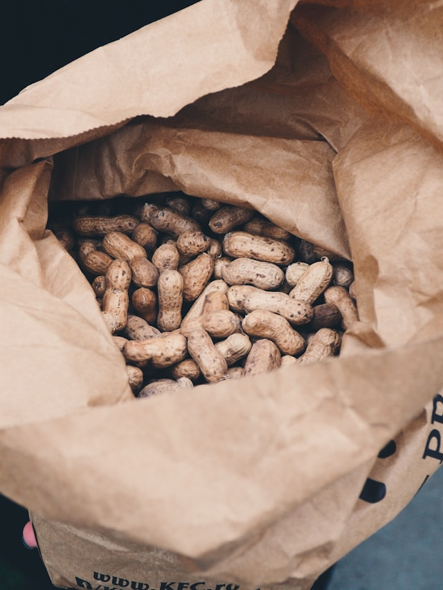
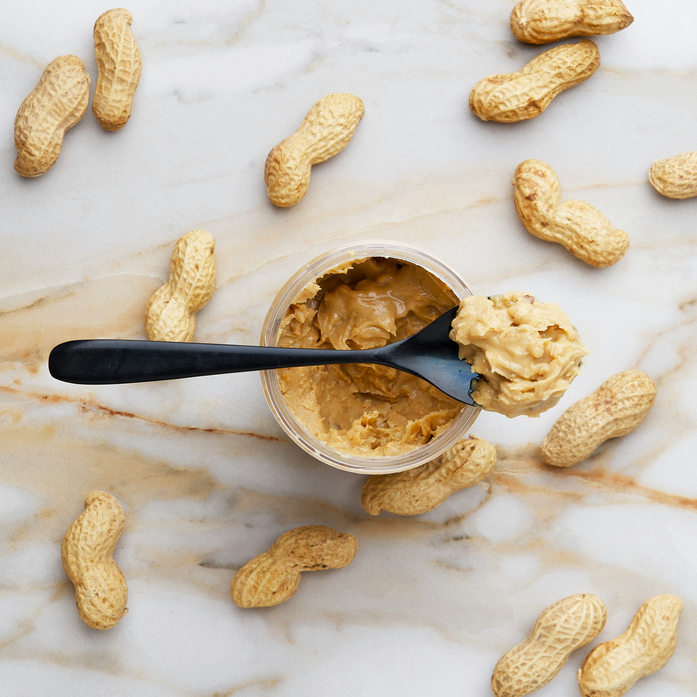
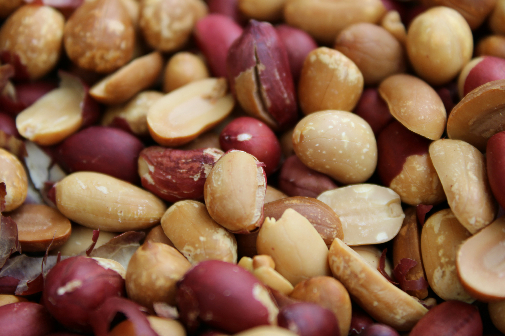
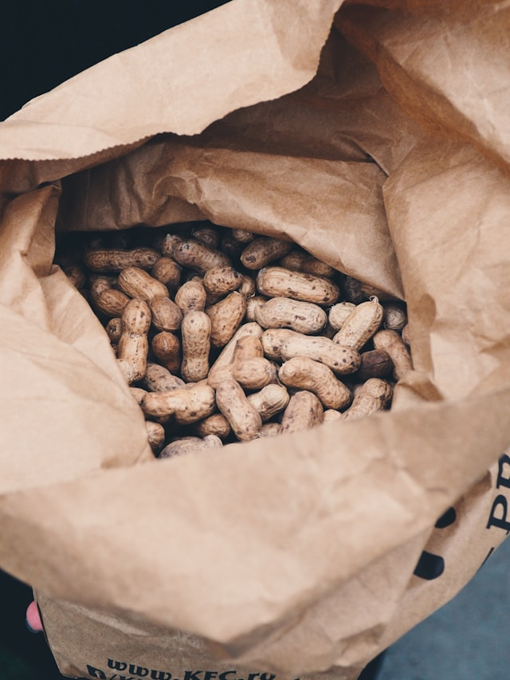
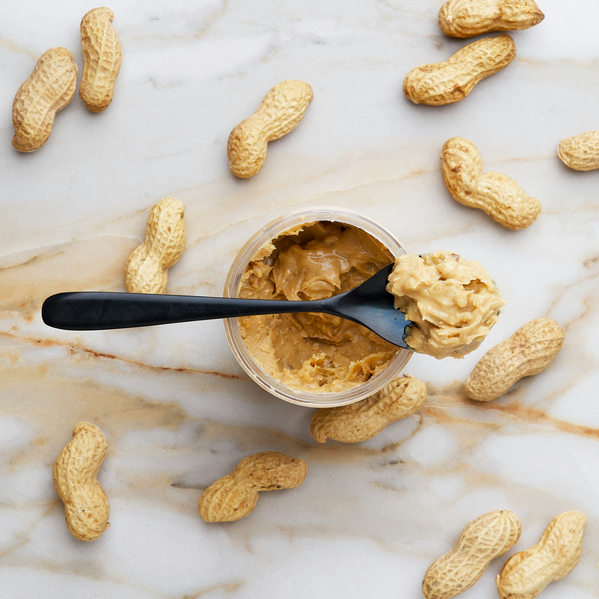

The Ultimate Peanut Sanctuary
This site is 100% dedicated to peanuts—history, types, recipes, and pure peanut passion.
Peanut Gallery
 





Quick Peanut Fact
Peanuts are actually legumes, not nuts—scientifically speaking, they’re part of the Fabaceae family.